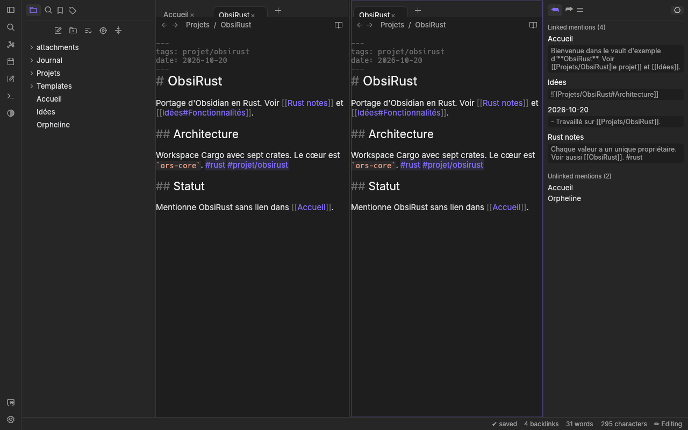
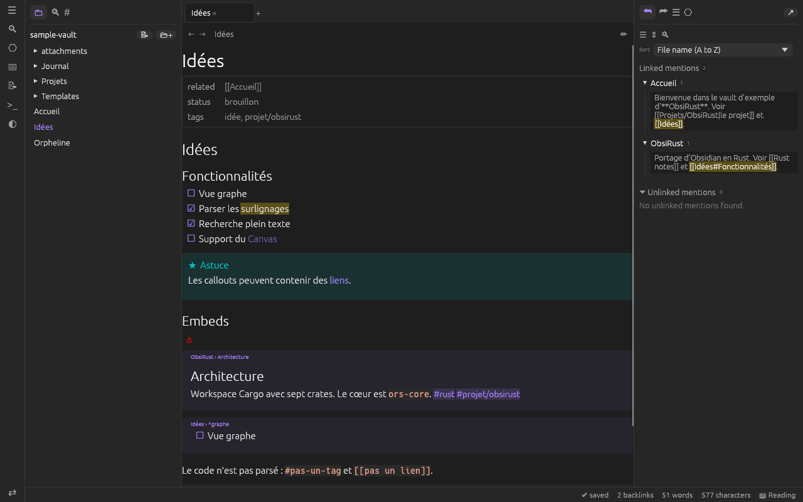
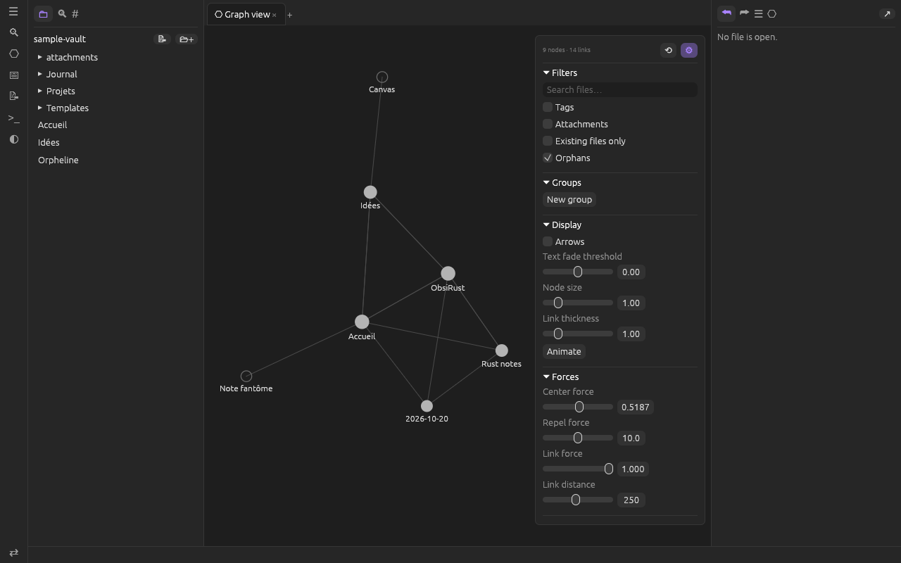

Dossier de travail · dépôt version 0.3.0
Des notes Markdown, en Rust, sur un vault déjà là.
OxiNote est une application de notes Markdown écrite en Rust, compatible avec les vaults Obsidian existants. Cette page décrit ce que le dépôt contient. Elle n’annonce pas de service public.
- Version
- 0.3.0
- Licence
- MIT ou Apache-2.0
- Interface
- eframe / egui
- Binaires
- oxinote-app, oxinote
Ce que c’est
Obsidian est une application propriétaire (Electron et TypeScript, code source fermé). OxiNote ne la modifie pas : le plan du dépôt décrit une réimplémentation en Rust qui reste compatible avec un vault existant — mêmes fichiers Markdown, même syntaxe de liens, d’embeds, d’étiquettes et de callouts, même dossier .obsidian/.
Le dépôt est rédigé en français. Le workspace Cargo regroupe sept crates, de la lecture du vault jusqu’à l’application de bureau et à l’outil en ligne de commande.
Hors périmètre, pour l’instant, selon le plan : les services payants Sync et Publish, et la compatibilité avec les plugins JavaScript existants.
Installation et mises à jour
Le README indique de télécharger l’archive du système dans les publications GitHub. Le workflow de release compile l’application et le CLI pour Linux x86_64, macOS Apple Silicon, macOS Intel et Windows x86_64. Sur Ubuntu ou Debian, un paquet .deb installe l’application dans le menu et la commande oxinote.
Au démarrage, OxiNote interroge au plus une fois par jour l’API des publications GitHub. Si une version plus récente existe, l’archive de la plateforme est téléchargée, comparée au fichier SHA256SUMS.txt, puis installée ; elle s’applique au redémarrage. Les réglages About proposent « Installer automatiquement » (valeur par défaut), « Me prévenir seulement » ou « Désactivées ». Une installation .deb sous /usr, un dossier non modifiable ou une application macOS transloquée est seulement signalée.
Pour publier : aligner version dans Cargo.toml ([workspace.package]), puis lancer le workflow Release avec le même numéro (v0.1.0, ou v0.1.0-rc.1 pour une pré-version) ou pousser un tag vX.Y.Z.
L’application de bureau
Le binaire oxinote-app est une interface native eframe / egui. Le guide des agents marque cette crate « en cours » ; le code et les captures du dépôt montrent déjà les pièces suivantes.
Écrire et lire
- Modes Live Preview, Source et Lecture.
- Mise en forme, listes, cases à cocher, recherche et remplacement dans la note, pliage.
- Navigation par titres : sommaire flottant ou loupe.
- Panneau des propriétés typées en tête de note.
Retrouver
- Explorateur de fichiers, recherche, étiquettes, backlinks, liens sortants, plan.
- Basculeur rapide et palette de commandes.
- Signets, notes quotidiennes, modèles.
Espace de travail
- Onglets et groupes de panneaux.
- Thème système, clair ou sombre.
- Plugins de cœur activables : backlinks, signets, notes quotidiennes, graphe, plan, propriétés, étiquettes, modèles, nombre de mots. Les identifiants inconnus de core-plugins.json sont conservés.
- Surveillance du dossier du vault, avec temporisation.
PDF et Git local
- Lecteur PDF (moteur hayro, pur Rust) en onglet, ouvert depuis un lien ou un embed, avec page et zoom.
- Sauvegarde Git locale via le binaire git du système : commit automatique, .gitignore, historique par note et restauration. Pas de dépôt distant.



Markdown reconnu
Le parseur s’appuie sur CommonMark et GFM (pulldown-cmark), avec un traitement maison pour la syntaxe Obsidian. Les positions sont des intervalles d’octets dans le fichier d’origine, pour réécrire les liens sans déplacer le reste.
- Frontmatter YAML entre ---, converti en JSON. Les clés aliases / alias, tags / tag, et une valeur qui est un wikilink entier.
- Wikilinks [[cible#sous-partie|libellé]], embeds ![[…]], liens et images Markdown internes.
- Étiquettes imbriquées #tag/enfant, identifiants de bloc ^id, tâches, surlignage ==…==, commentaires %%…%%, callouts > [!type], mathématiques.
Rien de cela n’est relevé dans un span de code, un bloc de code, les mathématiques, un commentaire HTML ou un commentaire %%…%%.
Les propriétés s’éditent en préservant le reste du fichier. Les types lus et écrits dans .obsidian/types.json sont : text, multitext, number, checkbox, date, datetime, aliases, tags. Le CLI et l’index listent les propriétés du vault, renomment ou fusionnent une étiquette, et mettent à jour les liens quand une note ou un dossier est renommé.
La résolution des liens suit les règles décrites dans le plan : chemin exact, puis nom de fichier unique ; en cas d’ambiguïté, le fichier le plus proche du dossier source, puis l’ordre alphabétique.
L’outil oxinote
Chaque sous-commande prend le dossier du vault en premier argument. La recherche reprend la syntaxe Obsidian : tag:, path:, file:, une phrase entre guillemets, -exclure, OR, et une expression /regex/.
| Commande | Rôle |
|---|---|
| stats | Notes, pièces jointes, liens, étiquettes, orphelines, mots. |
| search | Recherche plein texte, sortie chemin:ligne: texte ou JSON. |
| backlinks, links, unresolved | Liens entrants, liens sortants résolus ou non, cibles absentes. |
| tags, tag | Comptage, arbre, renommage, ajout ou retrait sur une note. |
| props, prop | Liste des propriétés et de leurs valeurs ; écriture ou suppression dans le frontmatter. |
| orphans, find | Notes sans lien ; recherche floue par nom, chemin ou alias. |
| graph | Graphe JSON ou Graphviz, graphe local, disposition force-directed en option. |
| rename | Renomme ou déplace une note et met à jour les liens, avec --dry-run. |
| daily | Ouvre ou crée la note du jour et affiche son chemin. |
| export | Exporte le vault en site HTML statique (wikilinks vers des liens relatifs). |
cargo test --workspace
cargo run -p oxi-cli -- stats examples/sample-vault
cargo run -p oxi-app -- examples/sample-vaultLe vault examples/sample-vault/ sert aux tests, au CLI et à l’application. Les tests qui écrivent en font une copie temporaire.
Architecture
| Crate | Rôle dans le dépôt |
|---|---|
| oxi-core | Types partagés : chemins, notes analysées, liens, étiquettes, graphe, traits de lecture et d’écriture, vault en mémoire. |
| oxi-markdown | Analyse, rendu HTML, réécriture des liens, édition du frontmatter. |
| oxi-vault | Fichiers, configuration .obsidian, corbeille, surveillance, notes quotidiennes, modèles, types de propriétés. |
| oxi-index | Cache de métadonnées, backlinks, étiquettes, recherche, renommage avec mise à jour des liens. |
| oxi-graph | Disposition force-directed (répulsion Barnes-Hut, ressorts, centre, amortissement), graphe local, filtres, groupes de couleurs. |
| oxi-cli | Binaire oxinote. |
| oxi-app | Binaire oxinote-app. Marquée « en cours » dans le guide des agents. |
Le frontmatter YAML est converti en serde_json::Value. L’index de recherche est un index inversé écrit pour le projet ; le plan indique que Tantivy reste une piste ultérieure, pas le moteur en place. Le code Rust du workspace interdit unsafe.
Prévu, pas encore là
La section « feuille de route » de PLAN.md liste, après ce qui est marqué fait, les fonctions suivantes. Elles ne sont pas présentées comme disponibles.
- Bases. Vues tableau filtrées et triées par propriétés, éditables, au format .base.
- Canvas. Tableau blanc de cartes, notes, images et liens, format .canvas.
- Citations. Import BibTeX ou Zotero, autocomplétion [@clé], note de lecture.
- PDF, suite. Sélection et recherche de texte, embeds PDF dans le Live Preview, annotations. Le lecteur en onglet, lui, est déjà dans l’application.
- Git, suite. Dépôt distant optionnel (push et pull). La sauvegarde locale est déjà dans l’application.
Le plan de phase 3 citait aussi une API de plugins (traits Rust, puis WASM), des thèmes et des snippets CSS, ainsi qu’un objectif de performance sur un vault de 10 000 notes. Le guide des agents ne les marque pas comme livrés ; cette page ne les compte pas parmi les fonctions en place. Le thème clair, sombre ou système existe, sans chargeur de thème CSS décrit ici.